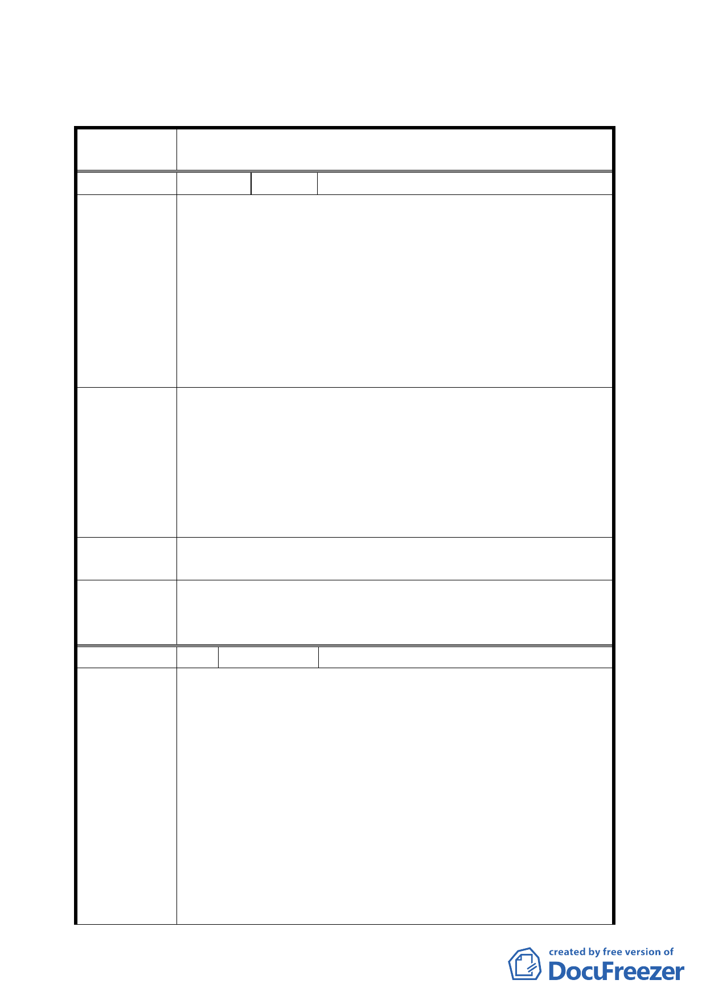

三、 公民或團體所提意見審決如後附綜理表。。
臺北市都市計畫委員會公民或團體所提意見綜理表
案
名
變更臺北市松山區民生段 42 地號 26 筆土地住宅用地為住宅
用地（特）細部計畫案
編 號 1 陳情人 王虹
建議位置：松山區民生段 42-18 地號（松山區民生東路五段
177 巷 4-2 號 3 樓）
反對本案都更。
一、本次公告公開展覽訊息未知會所有住戶。
陳 情 理 由 二、目前房屋使用狀況良好，不須都更，民生社區保持單純
安靜（人少）最佳居住環境。
三、「誠美建設」無都更案經驗，計劃步驟混亂，無公信力。
四、時機點不好，「文林苑事件」建商炒作都更的作法，令
人生厭，應暫停都更。
一、建立具公信力的機構，辦理都更。
二、爾後都更計畫核定後在權利變換之前（即尚未同意分配
條件前）住戶條件談不攏或時間過長都可退出。
建 議 辦 法 三、在取得住戶同意書時，必須出具權利價值變更計畫，讓
住戶充分了解都更後的權益。
四、單一房屋住戶參與都更，應比照首次購屋條件辦理低率
貸款，供其裝潢等。
第 635 次委 所提意見非涉本次計畫變更緣由，錄請市府納入後續辦理都
員 會 決 議 市更新作業參考。
一、 本案修正後通過。
委員會決議 二、 至於攸關後續都更建議意見、同意書及權益變換等事
宜，移請市府都市更新處協助辦理。
編號
陳情理由
2 陳情人 劉金鑾
1．實施者的設計圖說送到市政府後，市政府都發局是否都
可片面的修改？台北市有多少的 6m 巷有商業行為，為
何民生社區不行？
2．本案當初好好看系列－原始的細部計畫，南側（新東街
31 巷）一～二樓是同意可以作店鋪使用的，因為這樣的
設計地主們跟建商簽了約，可是現在老舊公寓更新專案
的公展，市政府卻告訢我們一樓不可以作店鋪使用了，
這樣叫我們怎麼辦？希望這個部分市政府能放寬使用。
3．原本的設計圖是經過住戶多次會議討論出來的，南側沿
街店鋪可以營造一個還不錯的氛圍，它是可以相當多類
型的商業行為，像咖啡店或輕食類的餐廳或便利商店，
沙龍…等，有優質的商店進駐社區，對新東街 31 巷而
- 10 -